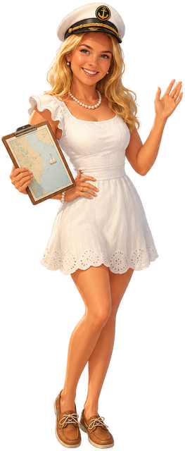

Kapten Emily 🧭
Ahoj, crew! Jag är Emily, er skeppare. Här är veckans plan — tryck runt på dygnen och häng med. Vi ses ombord! ⚓️☀️
🗓️ Veckan, dag för dag (tryck på ett dygn)

Ahoj, crew! Jag är Emily, er skeppare. Här är veckans plan — tryck runt på dygnen och häng med. Vi ses ombord! ⚓️☀️